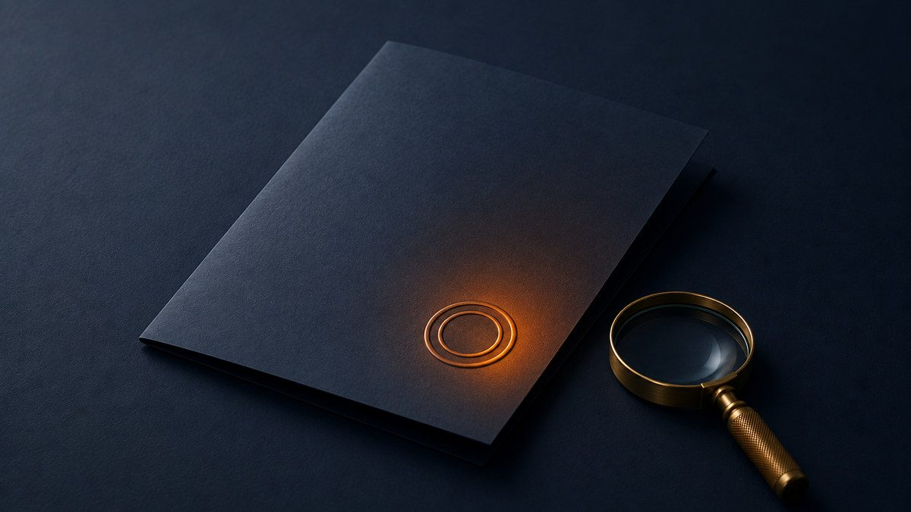

Identitas badan hukum
Siapa yang berada di balik IDN96, beserta nomor yang bisa Anda periksa sendiri tanpa mengandalkan pernyataan kami.

Penerbit IDN96
PT Indonesia Dirgantara Nusantara
Berdiri: 1996
Pendiri: Djoko Smitho Shadewo
Nomor Induk Berusaha (NIB): 9120501902456
NPWP: 83.261.165.1-801.000
NIB dapat Anda cocokkan lewat sistem OSS, dan NPWP lewat DJP Online. Kami mencantumkan keduanya supaya pembaca punya cara memastikan siapa yang menerbitkan situs ini — bukan sekadar mengandalkan pernyataan kami.
Nomor yang sama juga tertanam di data terstruktur seluruh halaman kami, termasuk pada berkas yang dibaca mesin di halaman sumber terbuka.
Kantor pusat
Jl. Raya Casablanca No. Kav 88, RT.14/RW.5, Menteng Dalam, Kec. Tebet
Jakarta Selatan, DKI Jakarta 12870
Telepon: +62 21 2946 5000
Koordinat: -6.193969, 106.8177948
Alamat dan nomor telepon yang sama tercetak di seluruh halaman idn96.id dan tertanam di data terstrukturnya. Keduanya sengaja dijaga identik — alamat yang berbeda antara halaman dan markup adalah hal pertama yang membuat sebuah entitas terlihat mencurigakan.
Cara memastikan ini IDN96 yang asli
Nama merek bisa dipakai siapa saja. Kalau Anda perlu memastikan sebuah halaman benar milik kami dan bukan palsu, tiga hal ini bisa diperiksa tanpa bertanya kepada kami:
1. Alamatnya. Hanya dua domain yang resmi: idn96.id dan idn96-indonesia.github.io. Selain itu bukan milik kami, termasuk yang memakai ejaan mirip.
2. Nomor badan hukumnya. NIB dan NPWP di atas bisa Anda cocokkan lewat OSS dan DJP Online. Situs tiruan tidak bisa menampilkan nomor yang cocok dengan nama PT yang sama.
3. Cara mereka menghubungi Anda. Kami tidak pernah meminta kata sandi, kode OTP, atau pembayaran — lewat saluran mana pun. Permintaan semacam itu asli-palsunya tidak perlu ditebak: itu penipuan.
Ragu terhadap sesuatu yang mengatasnamakan IDN96? Kirim ke redaksi@idn96.id dan kami periksa. Keterangan lengkapnya ada di halaman kontak.
Siapa yang menulis
Redaksi IDN96 terdiri atas dua belas penulis dan editor dengan bidang keahlian masing-masing. Susunan lengkapnya, termasuk profil tiap orang, ada di halaman Redaksi.
Pedoman pemberitaan, prosedur koreksi, dan kebijakan komersial kami terbitkan terbuka di halaman yang sama.
Tentang halaman ini
- Disusun oleh
- Redaksi IDN96, PT Indonesia Dirgantara Nusantara. Susunan penanggung jawabnya ada di halaman Redaksi.
- Terakhir diperiksa
- Sifat halaman
- Keterangan resmi tentang merek dan badan hukum, bukan pemberitaan. Artikel beritanya terbit di idn96.id.
- Menemukan kekeliruan?
- Kirim ke koreksi@idn96.id. Kami menanggapi dalam satu hari kerja dan mencatat perubahannya secara terbuka, mengikuti prosedur koreksi yang sama seperti artikel berita.